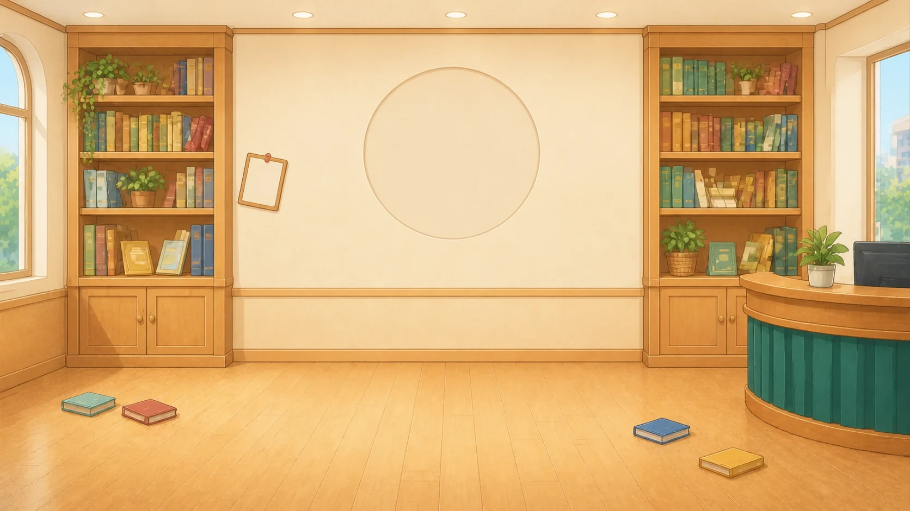
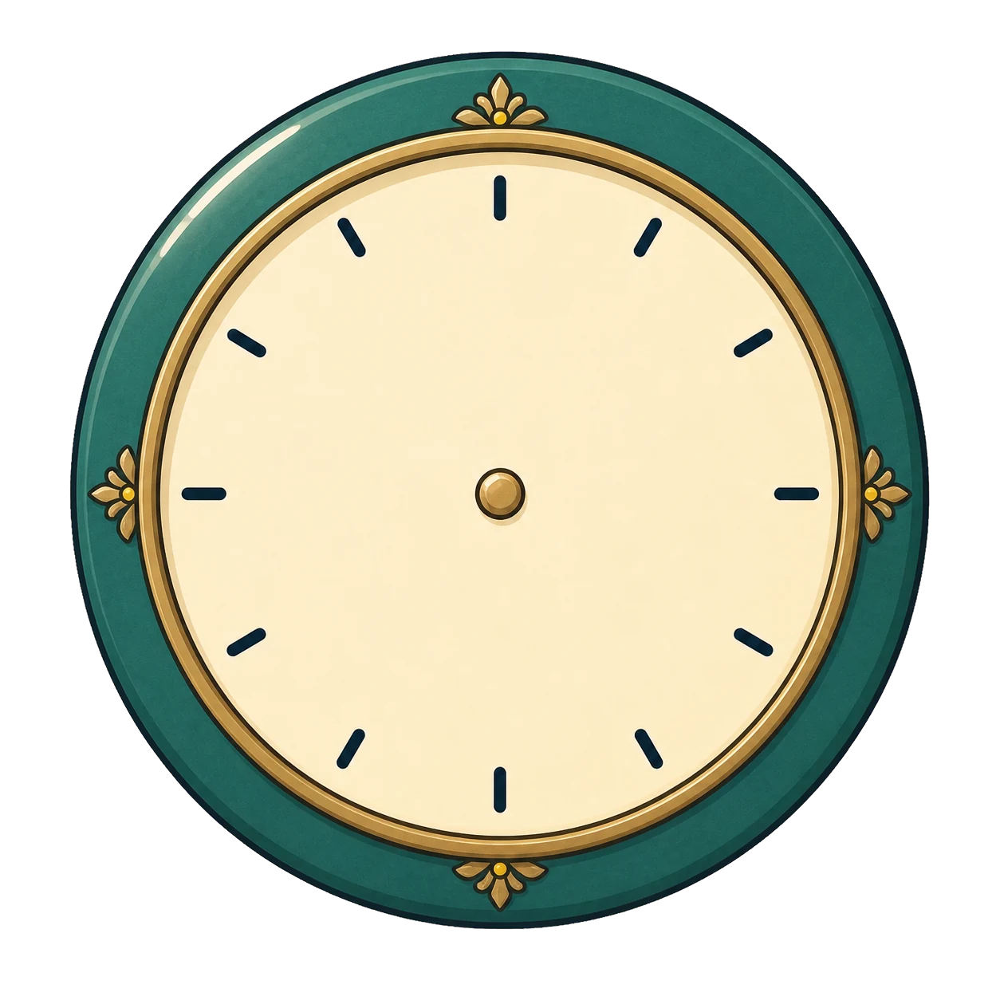
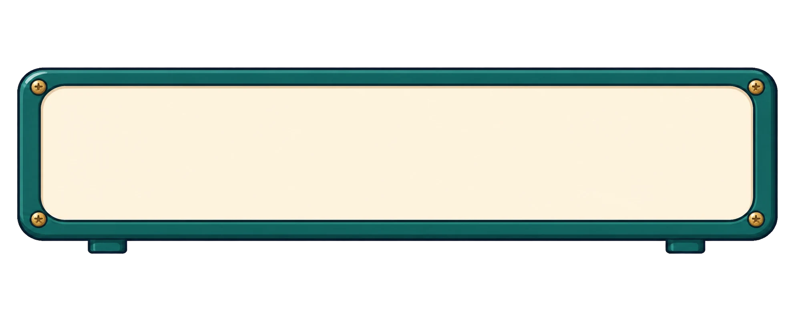
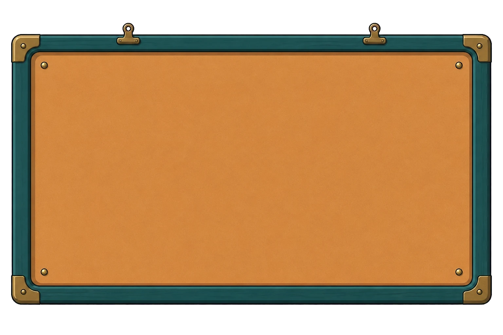
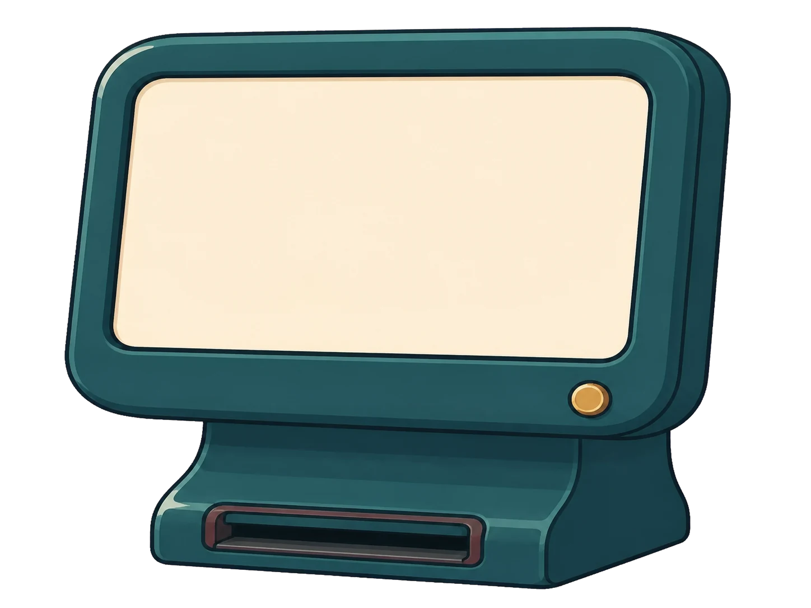
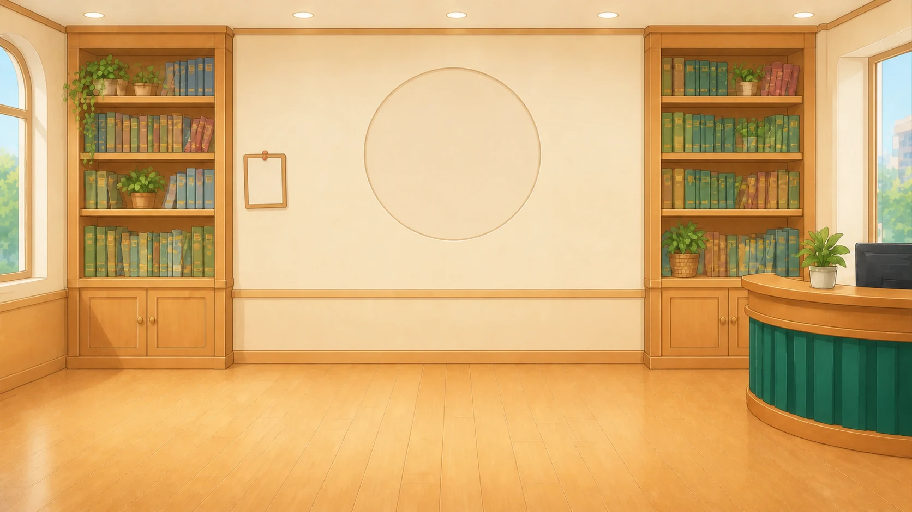
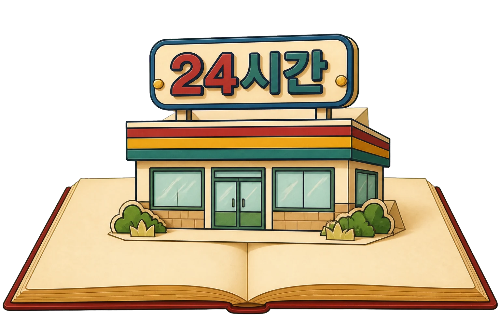
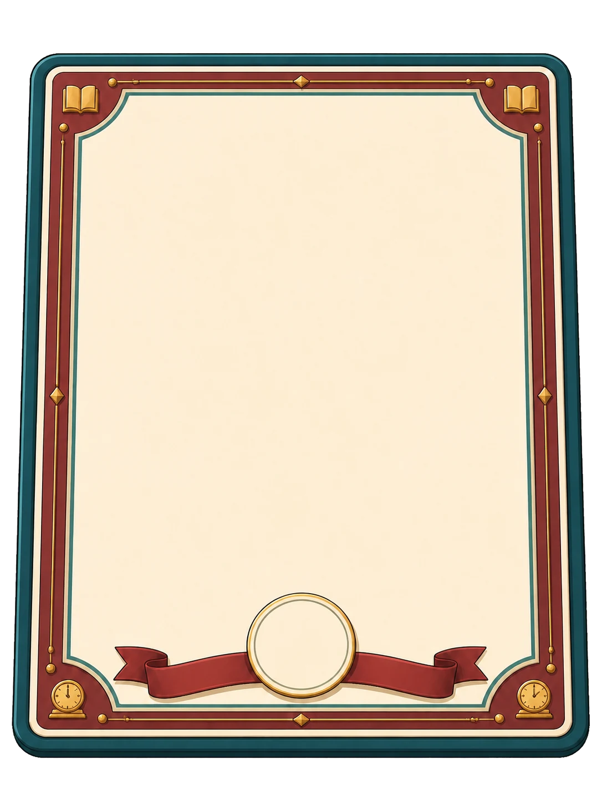

큰일 났어! 도서관 시계가 고장 나서 시간이 뒤죽박죽이야! 당장 독서 교실을 시작해야 하는데 언제인지 알 수가 없어. 누가 좀 도와주세요!
[?]
걱정 마세요! 시계 보는 법을 잘 아는 제가 도와드릴게요!
[3시]
와, 정답이야! 시계를 아주 잘 보는구나. 고마워, 덕분에 첫 번째 시계를 고쳤어. 이제부터 우리 도서관을 수학으로 구해줄거라 믿어!!
[STEP 2. 수리로 해결해요]

전광판의 시간이 다 깨져버렸어. '몇 분 전'인지 잘 읽어보고, 똑같은 시각을 가리키는 알맞은 시계를 찾아줄래?

[30분 후 →]
독서 교실 시간표가 지워져서 언제 끝나는지 알 수가 없다. 시계를 보고 걸린 시간을 계산해서 빈칸을 채워줄 수 있겠니?

도서 대출 시스템을 다시 켜려면 시간의 규칙을 풀어야 해! 1일과 24시간의 관계를 잘 생각해서 블록을 알맞게 넣어주렴!

해냈다! 시간의 규칙을 모두 풀었어요!

우리 동네 편의점 간판에 왜 '24'가 적혀 있을까? 1일은 24시간이기 때문에, 하루 종일 쉬지 않고 문을 연다는 뜻이란다!
그럼 하루 종일 문을 여는 도서관이 있다면, 그 도서관은 며칠 동안 문을 여는 걸까요?
맞았어! 24시간은 1일과 같지!

[마을 수리대원 인증서]
마을 수리대원 인증서 (도서관 편)
위 대원은 정확한 시간 계산으로 도서관 안내문을 완벽하게 수리하였기에 이 증서를 수여합니다.
맞힌 문제 수
클리어 소요 시간
정말 고마워! 네 덕분에 도서관이 완벽해졌어!
언제든 제 수학실력이 필요하면 불러주세요!